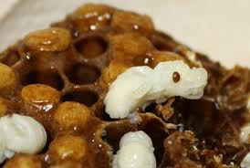
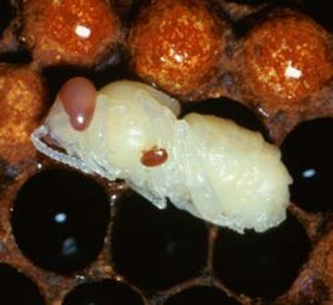

Varroa Mites
Varroa mites like to breed in capped cells that bees are birthed in as this is the only place they can reproduce.

They carry many dangerous diseases and cause current diseases to be more powerful.

1 Describe the pest/disease/problem.
The Varroa mite is an external mite that clings to other bees and kills them. It kills them by sucking their blood. Also it can spread a disease called Varroosis. The
Varroa mite is an external mite that clings to other bees and kills
them. It kills them by sucking their blood
2 What is the cause?
Varroa mites can only reproduce in a bee hive. I addition, bees can nourish varroa mites incredibly, as the mites are a parasite.
3 What are the symptoms?
Varroa mites look like bee sized ticks to the eye, however, earlier signs of varroa mites include abnormal brood pattern, sunken and chewed cappings, and larvae slumped in the bottom or side of their cell.
4 What damage will occur to the hive? (What should we
look for?)
Some damage will be loss of honey bee lives. As previously said, varroa mites can only breed in hives, which means that quickly your entire hive will be infected with varroosis, the most common varroa mite disease. This is because of the necessity of hives to the varroa mites as a species.
5 What can we do to control / fix this problem?
A new idea is the advanced technology Varroa Gate. to fix this problem

The Varroa Gate uses advanced chemicals to remove the varroa parasite as a bee exits and enters the hive, sliding the chemicals over the body.
Another way, is using apistan strips. Hanging two of these strips in the brood chamber will cause the fluvalinate in the strips to come in contact with the bees. The chemicals will be distributed to the entire hive, kill the varroa mites.
6 What can be done to prevent this problem from
occuring?
You can install the Varroa Gate and inspect your hives for mites and symptoms of mites.